EQUIPES
Brasil
A seleção brasileira feminina de vôlei é uma das potências mundiais do esporte. Ao longo de sua história, conquistou importantes títulos, incluindo duas medalhas de ouro olímpicas (Pequim 2008 e Londres 2012) e uma prata (Atlanta 1996 ).
Atualmente, a equipe conta com jogadoras talentosas e experientes, como a oposta Kisy, a central Carolana, a ponteira Gabi Guimarães e a líbero Nyeme. O time é conhecido por sua técnica refinada, habilidade tática e espírito de equipe.
No cenário internacional, a seleção brasileira feminina de vôlei continua a ser uma força a ser reconhecida, competindo sempre no mais alto nível e buscando adicionar mais conquistas ao seu impressionante histórico.
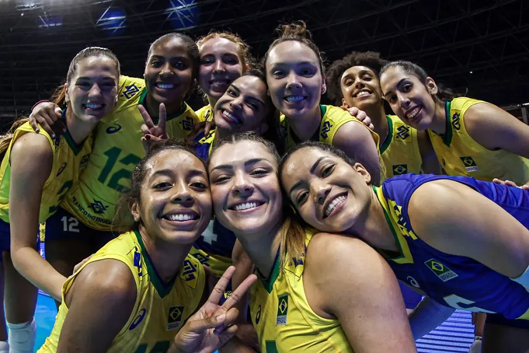Bulgária
A seleção feminina de vôlei de quadra da Bulgária tem uma história marcada por altos e baixos, mas mostrou momentos de grande habilidade e competitividade ao longo dos anos. Embora não seja uma das potências dominantes do esporte, a Bulgária tem conseguido alcançar resultados respeitáveis em competições internacionais.
A seleção feminina de vôlei da Bulgária teve momentos de destaque em competições como o Campeonato Europeu, onde conquistaram vitórias importantes e demonstraram um estilo de jogo competitivo e emocionante. Embora não tenham alcançado medalhas em eventos de grande porte, como os Jogos Olímpicos ou o Campeonato Mundial, as jogadoras búlgaras continuam a representar orgulhosamente seu país em torneios internacionais, inspirando uma nova geração de talentos no vôlei.
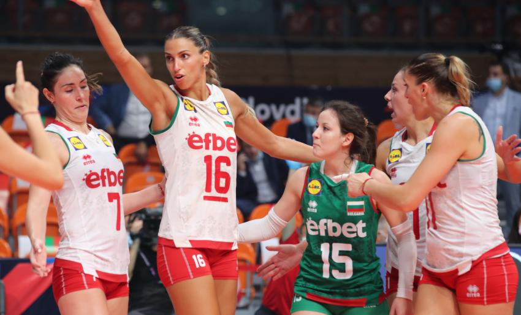Canadá
A seleção feminina de vôlei de quadra do Canadá tem mostrado um crescimento significativo nos últimos anos, buscando estabelecer-se como uma força competitiva no cenário internacional. Com um programa de desenvolvimento em constante evolução e uma crescente base de talentos, as jogadoras canadenses têm demonstrado habilidades notáveis e determinação em competições globais.
A equipe canadense é conhecida por sua abordagem resiliente e competitiva, muitas vezes surpreendendo adversários mais estabelecidos com seu jogo dinâmico e estratégias inovadoras. Com um misto de jogadoras experientes e jovens promessas, o Canadá está construindo uma base sólida para o futuro do vôlei feminino.
Entre suas principais jogadoras está a veterana Sarah Pavan, uma das melhores jogadoras do mundo, conhecida por sua potência no ataque e bloqueio. Além dela, jogadoras como Kiera Van Ryk, Brie O'Reilly e Alexa Gray também se destacam, trazendo habilidades técnicas e táticas fundamentais para o sucesso da equipe.
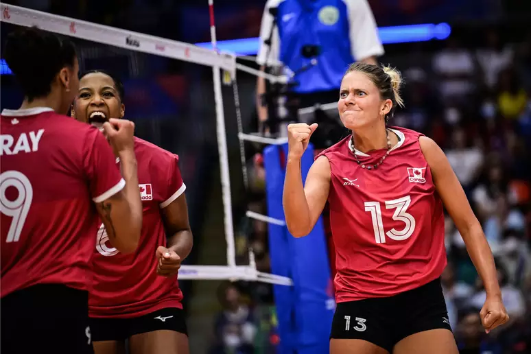China
A seleção feminina de vôlei de quadra da China é uma potência no cenário internacional, contando com talentosas jogadoras que demonstram habilidade e determinação em suas performances. Algumas das principais jogadoras incluem Zhu Ting, uma atacante habilidosa e líder em quadra, e Yuan Xinyue, uma bloqueadora talentosa e peça-chave na defesa da equipe.
Nos últimos anos, a seleção chinesa conquistou diversos títulos importantes, destacando-se suas vitórias nos Jogos Olímpicos, Campeonatos Mundiais e na Liga das Nações de Vôlei. Com um estilo de jogo disciplinado e técnico, elas demonstram uma combinação de força física e habilidade tática, tornando-se uma equipe temida por seus adversários.
Atualmente, a seleção chinesa continua a ser uma força competitiva no cenário do vôlei, buscando manter sua posição de destaque em competições internacionais. Com um elenco talentoso e uma sólida estrutura de apoio, elas continuam a representar a excelência do voleibol feminino chinês e a inspirar futuras gerações de jogadoras.
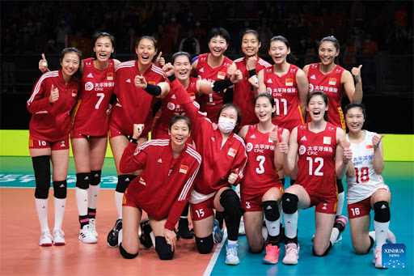República Dominicana
A seleção feminina de vôlei de quadra da República Dominicana tem emergido como uma força crescente no cenário internacional nos últimos anos. Com uma equipe talentosa e determinada, elas têm conquistado reconhecimento global e alcançado marcos significativos.
Algumas das principais jogadoras da equipe incluem Brayelin Martínez, uma atacante poderosa conhecida por sua habilidade de marcar pontos cruciais; Bethania De La Cruz, uma ponteira experiente com excelente habilidade de defesa e ataque; e Niverka Marte, uma líbero ágil e confiável na defesa.
Nos últimos anos, a seleção dominicana conquistou importantes vitórias em competições internacionais, como o Campeonato Pan-Americano, os Jogos Pan-Americanos e o título da Norceca de Vôlei, demonstrando sua capacidade de competir em alto nível. Esses triunfos têm ajudado a solidificar a posição da República Dominicana como uma potência emergente no vôlei mundial.
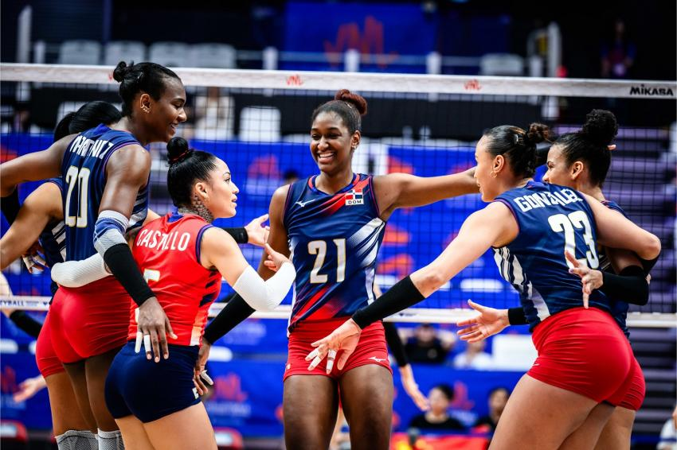França
A seleção feminina de vôlei de quadra da França é uma equipe em ascensão no cenário internacional. Embora não seja tão tradicional quanto algumas potências como Brasil, Estados Unidos e Rússia, a equipe francesa tem conquistado destaque nos últimos anos.
Apesar de não possuir um vasto histórico de conquistas, a seleção feminina de vôlei da França tem obtido resultados significativos em competições internacionais. Entre suas conquistas mais notáveis estão medalhas em campeonatos europeus e participações consistentes em torneios como a Liga das Nações e o Campeonato Mundial.
Atualmente, a seleção francesa está focada em consolidar seu lugar entre as melhores equipes do mundo. Com uma mistura de talentos jovens e experiência, eles buscam aprimorar seu jogo e alcançar resultados ainda mais expressivos. A equipe está trabalhando duro para se qualificar e competir nos Jogos Olímpicos e em outros grandes eventos do calendário internacional de vôlei.
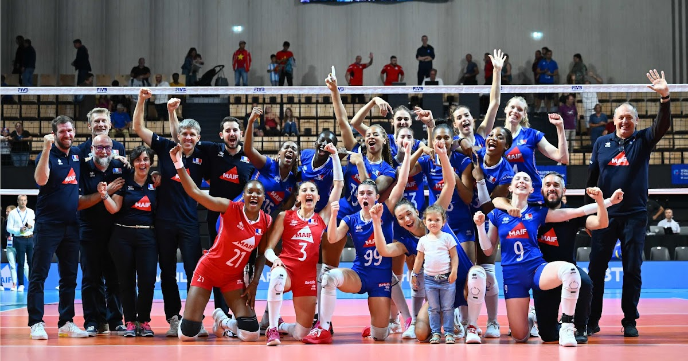Alemanha
A seleção feminina de vôlei de quadra da Alemanha, embora não seja tão proeminente quanto algumas potências tradicionais do esporte, tem um histórico respeitável e algumas jogadoras talentosas. Entre as principais jogadoras está Margareta Kozuch, uma atacante versátil e uma das líderes da equipe. Além dela, Mareen Apitz é uma líbero habilidosa, fundamental para a defesa da equipe.
A situação atual da equipe no cenário do vôlei feminino é de um desenvolvimento gradual. A Alemanha tem investido em suas categorias de base e no desenvolvimento de talentos, visando fortalecer sua posição no esporte internacionalmente. A equipe continua a participar de competições regionais e internacionais, buscando melhorar seu desempenho e alcançar resultados mais expressivos.
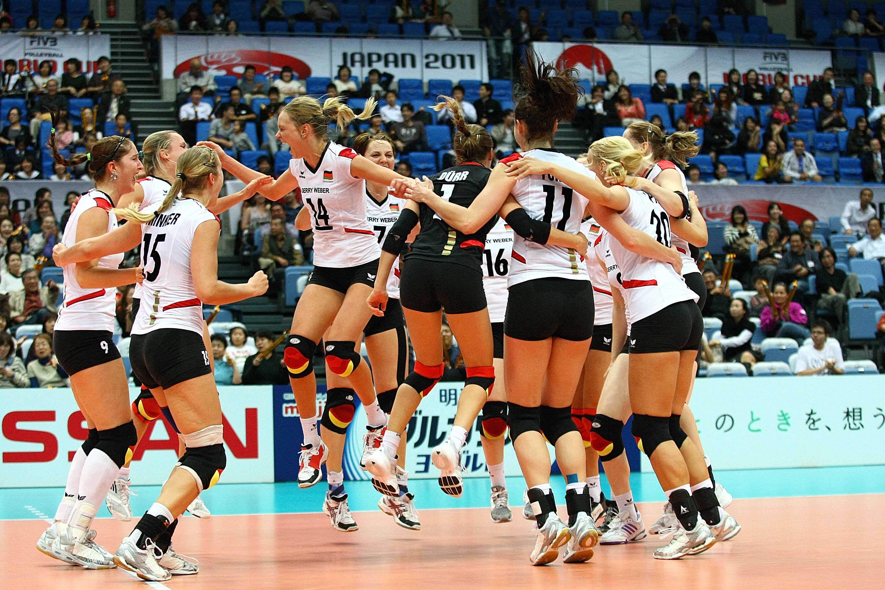Itália
A seleção feminina de vôlei de quadra da Itália tem uma longa história de excelência e conquistas no cenário internacional. Com uma mistura de talento jovem e experiência, as Azzurre, como são conhecidas, continuam a ser uma força a ser reconhecida no voleibol mundial.
Entre suas principais jogadoras, destacam-se nomes como Paola Egonu, uma das maiores estrelas do vôlei mundial, conhecida por sua potência de ataque e habilidade de marcar pontos decisivos. Outras jogadoras importantes incluem Cristina Chirichella, de destaque no bloqueio, e Miriam Sylla, uma ponteira versátil e atlética.
Ao longo dos anos, a seleção italiana conquistou diversos títulos e medalhas em competições importantes, incluindo o Campeonato Europeu, a Liga das Nações e os Jogos Olímpicos. Seu estilo de jogo agressivo e técnico as torna sempre uma adversária temível.
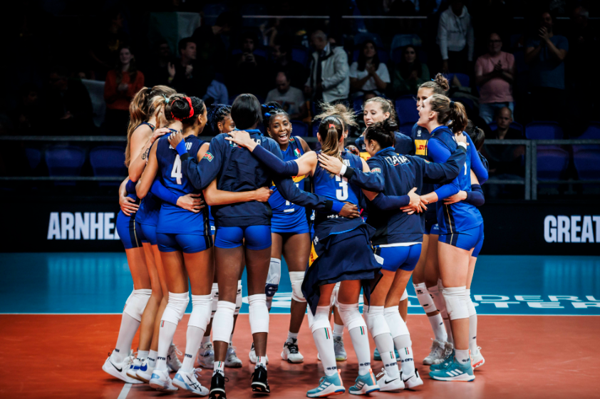Japão
A seleção feminina de vôlei de quadra do Japão é uma força reconhecida no cenário internacional, conhecida por seu jogo ágil, técnico e disciplinado. As principais jogadoras da equipe variam ao longo dos anos, mas algumas se destacam de forma consistente.
Entre as jogadoras mais notáveis estão Saori Kimura, uma atacante habilidosa e uma das líderes da equipe, e Haruka Miyashita, uma levantadora talentosa que guia o time com precisão e inteligência tática. Além delas, Yuki Ishii e Nana Iwasaka também têm contribuído de forma significativa para o sucesso da equipe.
As conquistas da seleção feminina de vôlei do Japão incluem medalhas de ouro em competições asiáticas, bem como participações consistentes em campeonatos mundiais e nos Jogos Olímpicos. O ponto alto veio em 1964, quando o Japão sediou os Jogos Olímpicos de Tóquio e a equipe feminina conquistou a medalha de ouro, um marco histórico para o esporte japonês.
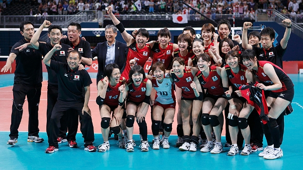Coreia do Sul
A seleção feminina de vôlei de quadra da Coreia do Sul tem uma história marcante no cenário internacional, com conquistas significativas e jogadoras talentosas. Entre as principais jogadoras da equipe estão Kim Yeon-koung, Lee Jae-yeong e Kim Hee-jin.
Ao longo dos anos, a seleção feminina sul-coreana conquistou diversos títulos regionais e participou de importantes competições internacionais, como os Jogos Olímpicos e o Campeonato Mundial. Algumas de suas conquistas mais notáveis incluem medalhas em competições asiáticas, como os Jogos Asiáticos e o Campeonato Asiático de Vôlei.
No entanto, a equipe enfrenta desafios constantes para competir com potências tradicionais do voleibol, como Brasil, Estados Unidos e China. A falta de recursos financeiros e estrutura de treinamento adequada muitas vezes limita o desenvolvimento da equipe.
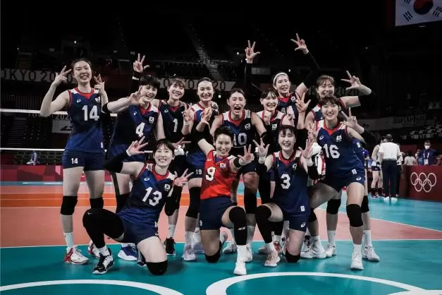Holanda
Entre as principais jogadoras da seleção holandesa, destacam-se nomes como Anne Buijs, uma talentosa ponteira conhecida por sua habilidade de ataque e defesa; Laura Dijkema, uma experiente levantadora que comanda o jogo com precisão e inteligência tática; e Lonneke Sloetjes, uma poderosa oposta que é uma ameaça constante para as defesas adversárias.
Nos últimos anos, a seleção feminina de vôlei da Holanda tem obtido conquistas significativas, incluindo participações consistentes em competições internacionais de alto nível, como o Campeonato Mundial e a Liga das Nações. Seus desempenhos impressionantes têm demonstrado a evolução do voleibol holandês e seu potencial para alcançar sucesso em nível global.
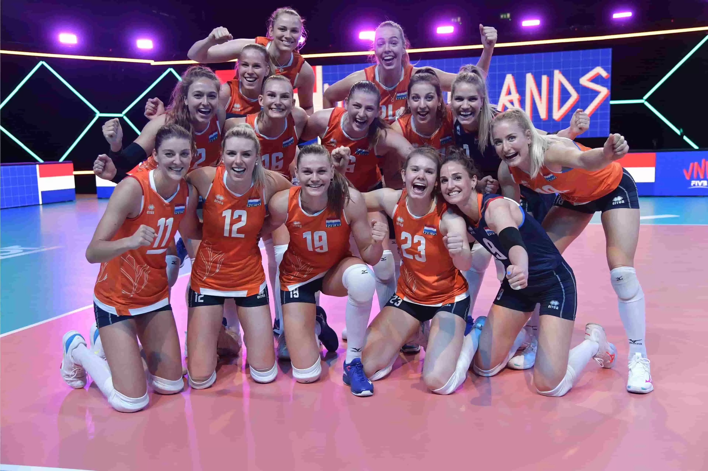Polônia
Entre as principais jogadoras da seleção polonesa, destacam-se nomes como Agnieszka Kąkolewska, uma central talentosa conhecida por sua força no bloqueio e ataque, e Malwina Smarzek, uma oposta destemida e prolífica pontuadora. Juntas, essas jogadoras lideram a equipe com sua experiência e habilidades técnicas.
Em termos de conquistas, a seleção feminina de vôlei da Polônia tem se esforçado para se destacar em competições internacionais. Embora ainda não tenham alcançado os mesmos patamares de sucesso que a equipe masculina, as jogadoras polonesas têm demonstrado um crescimento constante e competem com determinação em torneios como o Campeonato Europeu de Voleibol e a Liga das Nações de Voleibol.
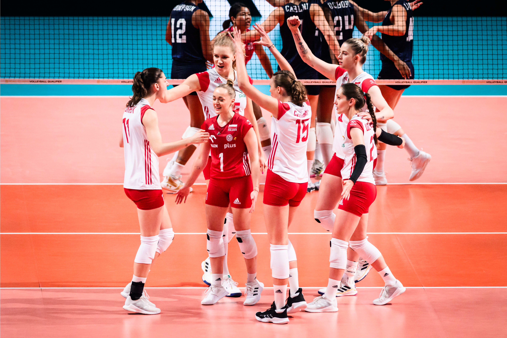Sérvia
A seleção feminina de vôlei de quadra da Sérvia emergiu como uma potência no cenário internacional, apresentando um elenco talentoso e conquistando sucessos significativos nos últimos anos. Entre as principais jogadoras da equipe, destacam-se nomes como Tijana Bošković, uma oposta de destaque conhecida por sua potência e versatilidade no ataque, e Maja Ognjenović, uma levantadora experiente e habilidosa na distribuição de bolas.
Nos últimos anos, a seleção feminina de vôlei da Sérvia conquistou resultados impressionantes, incluindo medalhas em competições importantes como o Campeonato Europeu de Voleibol, onde alcançaram o ouro em 2011 e 2019, além de uma medalha de prata nos Jogos Olímpicos do Rio de Janeiro em 2016, e uma medalha de bronze no Campeonato Mundial de Voleibol de 2018.
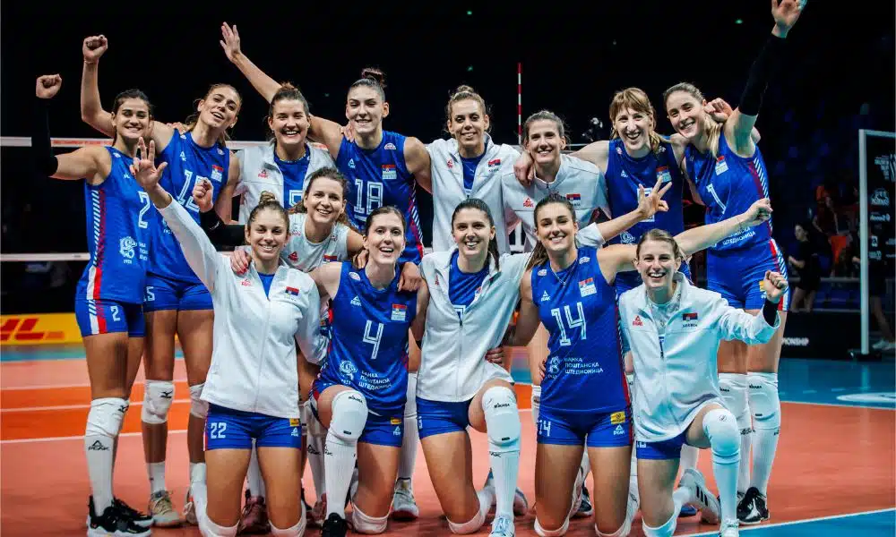Tailândia
A seleção feminina de vôlei de quadra da Tailândia tem emergido como uma força crescente no cenário internacional do voleibol. Com uma equipe talentosa e em ascensão, as jogadoras tailandesas têm conquistado destaque nos últimos anos.
No que diz respeito às conquistas, a seleção feminina de vôlei da Tailândia tem alcançado resultados notáveis. Embora ainda não tenham conquistado títulos de grande prestígio, como o Campeonato Mundial ou os Jogos Olímpicos, a equipe tem consistentemente se destacado em competições regionais, como os Jogos Asiáticos e o Campeonato Asiático de Voleibol. Essas conquistas têm contribuído para elevar o perfil do voleibol feminino na Tailândia e para consolidar a posição do país como uma potência emergente no esporte.
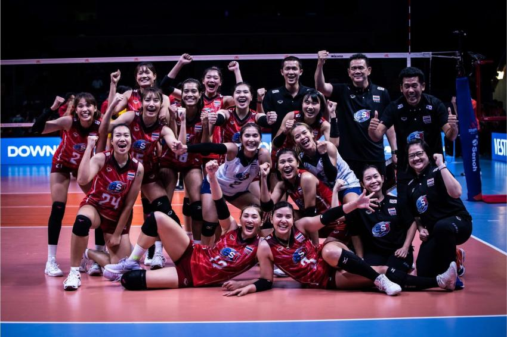Turquia
Entre as principais jogadoras da equipe turca está a oposta Hande Baladin, uma jogadora versátil e talentosa conhecida por sua habilidade de pontuação. Além dela, a líbero Simge Aköz é uma peça fundamental na defesa, com sua habilidade de leitura de jogo e capacidade de fazer defesas incríveis.
Nos últimos anos, a Turquia alcançou sucesso notável, conquistando medalhas em competições internacionais importantes, como o Campeonato Europeu de Voleibol Feminino e a Liga das Nações de Vôlei. Essas conquistas demonstram o crescimento e a força da equipe no cenário mundial do vôlei.
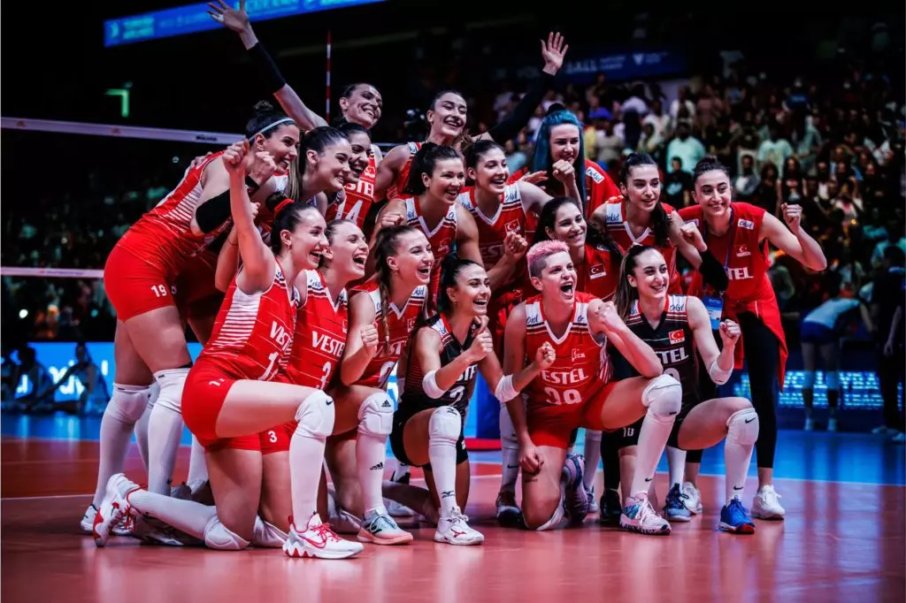Estados Unidos
A seleção feminina de vôlei de quadra dos EUA é uma das potências globais no esporte, com um histórico de sucesso e uma lista impressionante de jogadoras talentosas. Entre suas principais jogadoras, destaca-se a capitã e levantadora, Jordan Larson, conhecida por sua habilidade técnica e liderança em quadra. Além dela, destaca-se a oposta e artilheira, Annie Drews, que contribui com seu poderoso ataque e versatilidade tática.
Ao longo dos anos, a equipe dos EUA conquistou importantes títulos, incluindo três medalhas olímpicas, com ouro em Los Angeles 1984, prata em Pequim 2008 e bronze em Rio 2016. Além disso, elas têm um histórico impressionante em campeonatos mundiais e copas do mundo, frequentemente competindo nas fases finais e disputando as medalhas.
Atualmente, a equipe dos EUA continua sendo uma força dominante no cenário do vôlei, mantendo-se entre as melhores do mundo. Com uma combinação de talento individual, tática inteligente e trabalho em equipe, elas são frequentemente favoritas em competições internacionais e representam uma ameaça para qualquer adversário. A seleção feminina de vôlei de quadra dos EUA é uma fonte de orgulho para o país e continua a inspirar futuras gerações de jogadoras.
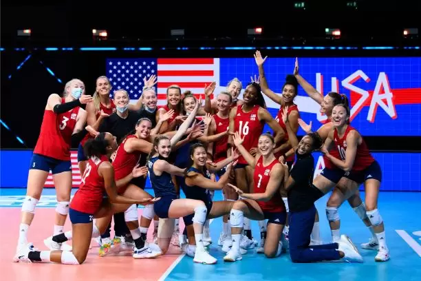